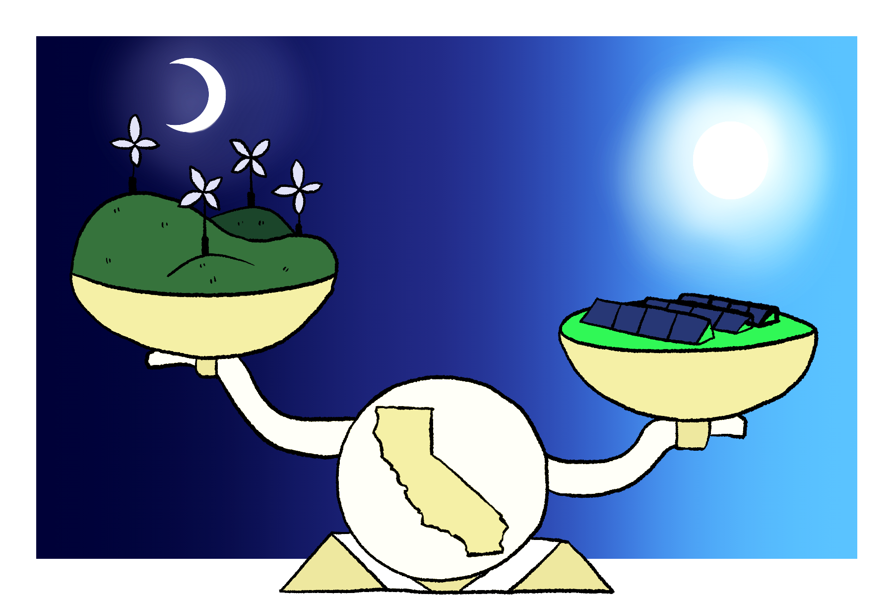

PROFESSOR KURTZ LEADS PROJECT TO EFFICIENTLY STORE
RENEWABLE ENERGY
August 20, 2020
By Leigh Bernacchi
California’s leaders want the state to reach 100 percent clean energy in the future, including being 60 percent powered by renewable energy by 2030 and being free of fossil fuels entirely by 2045. But if the state wants power without fossil fuels, School of Engineering Professor Sarah Kurtz said, there must still be a balance between the state’s supply of and demand for electricity.
Consumers rely on a steady supply of energy, but renewable energy solutions are variable. Solar power is great, but what happens on overcast days? Or at night? Wind generates energy, too, but what happens when the wind isn’t blowing?
“Optimizing costly storage enables us to overcome the barriers of long-term wind and solar shortages,” Kurtz said. “Short-term storage helps as the sun is setting and people are cooking supper. Long-term storage, between 10 and 100 hours, gets you through a storm, fog or a hot, still summer night.”
Right now, storage is expensive. Optimizing investments in batteries and other forms of energy storage will help overcome what Kurtz calls the biggest barrier to successful transition to a clean grid.
“My goal is to help the state meet its zero-carbon goal without increasing costs. I can help by identifying pathways that would enable us to get there faster and with lower costs,” Kurtz said.
Modeling different options, costs and outcomes helps determine the value-driven solutions. But optimizing investments requires supercomputing and modeling with a huge number of variables, from costs to location to timing.
That’s why Kurtz is leading a new $1.25 million project called “Modeling of Long-duration Storage for Decarbonization of the California Energy System,” funded by the California Energy Commission. The CEC granted 13 projects with more than $30 million total to find ways to store energy generated by solar collection for 10 to 24 hours — the critical period to overcome rainy and overcast days. The team, which includes faculty members and graduate students from UC Merced, UC Berkeley and the University of North Carolina, will work on quantifying the role of storage for California as it invests in storage to reach its zero-carbon goal.
“If you want to be able to run the state of California on renewable energy and you don’t want to use fossil fuels, you have to find novel ways of managing the grid. For example, if you know in January it gets foggy for the whole day. No sun, no wind. How are you going to power the state during that time?” Kurtz said. “That’s the challenge we need to address.”
The Golden State receives plenty of sunshine and it has the most solar infrastructure of any state — enough to solar power nearly 8 million homes. Going forward, nearly all newly constructed homes built will be equipped with solar panels under state law. Wind and solar work well together: The wind tends to blow most at night.
“Currently, solar provides 20 percent of the electricity generated in California, while wind provides only about 7 percent,” Kurtz said. “If we built more wind farms, we typically would need less storage to get through the night.”
Kurtz and her team are looking for ways to site storage and provide greater electric-grid stability to help the CEC make decisions. The researchers will look at a year’s worth of data and seek cost-effective ways of reducing greenhouse gas emissions and improving the state’s energy stability.
Kurtz brings her legacy of three decades of leading research at the National Renewable Energy Lab and having invented key components of multi-junction solar cells — which have been used on interplanetary space missions — to the new project. Her peers recognized the power of her transformational work by electing her to engineering’s most prestigious organization, the National Academy of Engineering.
From biofuels to photovoltaics, UC Merced is an ideal place to conduct renewable energy research, the faculty say, because of the abundance of sunshine. As the home of UC Solar and a branch of the Center for Information Technology Research in the Interest of Society (CITRIS) , several faculty members are working to transform the world’s renewable energy systems.
“I came to UC Merced to build on our sustainability and engineering programs,” Kurtz said. But she has a higher aim than that, too. “The beautiful thing about renewable energy is the more you use it the cheaper it gets, which paves a path to prosperity for the world.”